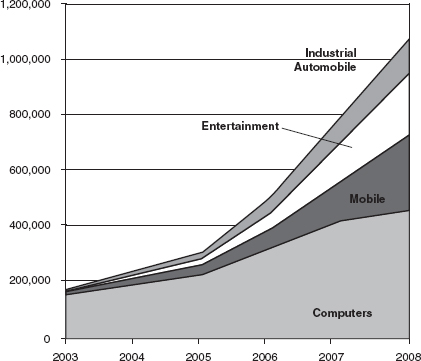

3 Modularity at the Inflection Point
A new era of networked ICT is upon us. As in earlier times of imminent change in information networking, its precise form and its efficiency remain malleable. This chapter discusses how these changes will challenge the interests of numerous stakeholders.
As in the last two eras, the market position of a leading firm (in this case Google) is important to understanding the technological and political economic choices confronting policy makers. Grasping the strength and limits of Google’s potential for dominance provides a vantage point for examining what is ahead. Although no single company’s fate is a true measure of an era’s dynamics, thinking about Google helps crystallize many of the diverse threads about the future of ICT.
Google and the “Information Utility” Metaphor
Big changes in infrastructure and its utilization invite new metaphors and analogies to better-known processes and markets as a way to understand the emerging market organization and its competitive implications. Today many experts are smitten by metaphors revolving around an emergent information utility reminiscent of one depicted in the movie Forbidden Planet. In that film, an alien race builds the ultimate ICT infrastructure—one that translates an individual’s ideas and dreams into material objects. The imagined infrastructure combines giant power grids and miles of flashing computer panels. The economy of scale is unmatched—an entire planet of synchronized effort to fulfill individual dreams (or nightmares).
A similar fascination with large-scale infrastructure (massive data storage and processing) and the delivery of individual requests (horizontal search) fuels predictions that Google soon will dominate in the ICT infrastructure.1 Computing may shortly be standardized enough and broadband delivery cheap enough, for it to become, like electricity, a general-purpose technology generated by large “power plants” and distributed over long distances.2 Related, but generally not explicitly outlined in these predictions, is Google’s leadership position in online advertising—both in terms of search monetization and the syndicated ad network (Adsense) that brings advertisers and third-party sites together (with Google taking a cut, or “vig,” of the fees for placing the ad).
In some respects, this reasoning captures critical aspects of the technological frontier. Today, new computing and information architectures—e.g., “the Cloud” and “the Grid”—implicitly rest on a much different set of capabilities and market organization than in the past.3 These architectures assume that powerful broadband networks intersect with two other emerging trends: (1) the integration of massive and inexpensive information storage with network architecture and services and (2) the emergence of virtual computer systems that collectively and flexibly harness many computers, including high-end supercomputers, to mesh on demand to meet user needs. For example, the Cloud could reorganize companies’ vastly underutilized ICT infrastructure for efficiency gains sometimes estimated at 50 percent or more.4
The Cloud’s building blocks demonstrate the major changes since the late 1990s. Then, Oracle championed “thin client” computing tied to the emerging popularity of laptop computers that relied heavily on networked processing and storage. But storage and computing costs on a networked basis were expensive. Bandwidth also was costly, inflexible, and not always available until after 2000. Further, the absence of industry-wide data standards and open protocols precluded full use of the proposed thin clients. Until recently EDS and other vendors coped with proprietary software standards and major jerry rigging of hardware from different vendors that did not easily mesh. Enterprises now demand that Grid and “Services-Oriented Architecture” (SOA) offerings mix and match data from different systems and meld them to enable business decision making.5
The Cloud’s implication is that there are huge economies of scale in storage and computing that favor a company with an economic proposition that supports giant scale. Google, with ad-supported revenues propelled by a dominant search engine (and with capitalization soaring as a result of huge stock appreciation), seems the logical candidate. In 2006 interviewees suggested that Google was buying 15 percent of the servers sold in the US market. By early 2007, Google was rumored to operate on 500,000 servers in its data centers! Google then used its own proprietary architectures to organize the data that fed its search-engine results and many of the applications built on them. Google apparently envisions a virtual private network built within, and fully interoperable with, the internetworking of the Internet.6 At best, telecom carriers are partners in this private network (by building the initial supply of dark fiber). Thus, as a corollary, the utility metaphor suggests that value added comes primarily from the value added of search and the biggest applications of (ad) revenue that it fuels. The rest of the ICT infrastructure businesses tend to be commoditized.
Google’s dominance in horizontal search, the largest source of ad revenue, could create a virtuous cycle. It may reinforce Google’s leadership in search and advertising placement because economies of scale and cost advantages in networking, data storage, and processing capabilities allow faster and more powerful searches and better targeting of ads to individual users. If this analysis is correct, there may be a potential for dominance across a broader array of services both in ICT end markets and in online advertising networks.7 More searches provide more inventory for ads and more insight into consumer behavior. This enables better ad targeting (on both Google and third-party sites via Adsense), thereby making Google more attractive to advertisers.
At the same time, dominance in search, and thus dominance of ad revenues, might make Google into a software powerhouse akin to IBM in the mainframe era. Clearly, Google derived economies of scope from the skills it developed in search software for becoming an alternative source of complex application software. More important, Adsense, a leading ad network, is essential to many developers of ad-funded applications.
Google’s leadership position in search and online advertising is significant and reflects two major developments in the economics and technology of ICT. Their leadership position could increase Google’s ability to leverage into related major markets in a manner analogous to the way that ICT giants in the previous two eras ascended—but this rests on two premises: (1) the implied advantages that accrue to Google across the landscape for online software (from email to complex enterprise applications) from its current scale in infrastructure and (2) the network externalities associated with Adsense and the online ad network it provides for advertising and third-party sites.
By modifying the scenario slightly, we could imagine somewhat fiercer competition among a handful of oligopolists that dominate the strategic heights of the global ICT infrastructure. Once again, if giant economies of scale exist for some market segments, three or four giant search and ad platforms could emerge globally because scale matters, especially in this market. The huge size might lead to rivalry between search giants and other entrants. For example, some telecom carriers may learn to use their networks’ information and billing systems to target ads and searches.8 Nokia also is investing in this set of capabilities from their position of strength on the handset.9 Immediately after Microsoft’s early-2008 bid to acquire Yahoo, one analyst foresaw Nokia, China Mobile, and a partnership of Apple and Disney as a possible cluster of giants.10
To summarize the logic of the utility metaphor: The Cloud makes economies of scale (infrastructure) and scope (ad network and software) into critical competitive assets. Inexpensive broadband allows vast computing centers to deliver at long distances. The ad revenues from search can fund building to scale, and then scale economies reinforce leadership in search while commoditizing the infrastructure and most of the equipment business.11 Ad leadership provides more data for targeting and more reach for advertisers. Indeed, search in itself may have properties of a virtuous circle—more searches lead to better searches and improved targeting of ads. In addition, there are economies of scope that create assets for being a leader in ad placement that may create a strong ecosystem centered around ad networks and related capabilities (analytics, targeting). Taken together, this mix of scale, scope, and control of the ad revenue stream allows the leader(s) in search to leverage their dominance into other parts of the ICT infrastructure.
In the next two sections, we suggest an alternative to this utility metaphor. First, we argue that the dynamics created by the rise of modularity in the ICT infrastructure’s building blocks—microelectronics, broadband networking, software, and digital content—are more about increasing speed and power with plunging costs, flexible combinations of inputs, and the spread of ICT intensive processes to a new universe of applications than they are about economies of scale. Scale matters, but is less important in the overall picture than the utility metaphor suggests. Second, we draw out two other metaphors for the future of the industry: the “systems engineering” metaphor and the “fashion industry” metaphor. Both of these, we suggest, offer a broader range of insights into the implications of modularity.
Modularity and the Inflection Point
The “information utility” metaphor rightly suggests that the global information economy—including telecommunications, information technology, and increasingly all forms of copyrighted content—is at an inflection point. At the inflection point, if policy permits, a shift in the strategic context of the market invites a new direction in networked ICT infrastructure.12 But we believe that the leverage points are different than the ones that the utility metaphor suggests. The two critical factors are pervasive modularity in ICT capabilities and ubiquitous, inexpensive broadband networking.
At an intuitive level, think of modularity as turning ICT capabilities into Lego bricks that can be assembled in any number of ways. More technically, modularity means that components that work together interoperate through transparent, nondiscriminatory interfaces. Interoperability requires (1) the technological capability to build separable inputs at competitive prices and (2) making design choices that ensure that interfaces connect seamlessly.13 As we noted in chapter 2, modularity first became important in terminal equipment and then became central to computing, storage, and networking elements. Now it is emerging as a defining characteristic of software and content, as well as ad networks and online payment systems.
Modularity has three crucial first-order implications. First, as a central design feature it facilitated the “Cheap Revolution” (to be discussed shortly), which changed the price and performance frontiers for ICT infrastructure. For example, modularity enabled many specialized market strategies that thrived with varied scale economies. Fueled by vigorous competition, the early trailblazers in modularity—terminal equipment and component markets—marched quickly towards more specialization and faster innovation rates. Second, modularity allowed the building blocks of ICT to be mixed and matched more cheaply, quickly, and efficiently in end-to-end service and equipment packages than was imagined even at the turn of the millennium. Third, modularity plus ubiquitous broadband will extend intensive networked information applications beyond traditional business and academic centers.
Modularity’s cumulative effect on the market goes beyond the first-order effects. It accelerates the growing significance of “multi-sided” platforms that alter pricing and competition dynamics in ways not found in most non-digital environments. A multi-sided platform serves two or more distinct types of customers that are mutually dependent and “whose joint participation makes the platform valuable to each.”14 Network externalities are direct and indirect. Thus, more Palm users directly increase the value to these users and to the Palm programming community. Cheaper computer printers indirectly make PCs more valuable, and more PCs expand the value of the printer market. Windows is a three-sided market because the software platform is deeply interdependent with application developers, end users, and hardware producers.15 The main implication of these multi-sided platforms is that pricing is optimized across the several sides of the platform. Some pieces of the platform may be priced below cost or subsidized because it is more profitable to charge more on other segments.16 This strategy can increase revenues and maximize the collective value of the platform for all stakeholders.
Modularity is important for multi-sided platforms because it increases the incentives to experiment with novel combinations of prices, inputs, and applications in ways that will subvert many players’ traditional business models. For example, a Web service may provide Voice-over-Internet Protocol service at little or no charge because the traffic, customer base, or complementary uses of VoIP offset its free provision.17 Yahoo provides a variety of free services to authors and other users to build original content that attracts traffic and generates ad revenues. Google and Microsoft have experimented with launching inexpensive communications networks in several cities to entice broadband wireless users to their search services. (Broadband significantly increases the level of search activities and hence their ad revenues.) The same is true for mobile data services. Indeed, Google (and presumably AT&T) was astonished and at first suspected an error when it saw “50 times more search requests coming from Apple iPhones than any other mobile handset.”18 Similarly, the legacy telecom giants may raise the price of underlying broadband data capacity to allow cheaper, more flexible pricing of the services offered over broadband.19 This multi-sided strategic logic does not preclude anti-competitive behavior, but limits the incentive of suppliers to harm consumers, a major concern for policy. Inflated pricing or predation is more difficult to sustain when the potential routes to providing a service become so varied.
Modularity is important for multi-sided platforms, and thus for the information utility model, because it multiplies the potential routes for providing a service or function. Today, at the inflection point, the potential for full modularity and ubiquitous broadband is close at hand. The dawning of an ICT market with separate ICT capabilities (e.g., networking, processing, storage, application logic, content, and terminal devices) that can more readily be mixed and matched is evident. Often these capabilities will be integrated into stickier, bundled groupings (e.g., an iPod-like combination of storage and terminals). However, flexible, powerful building blocks allow diverse architectures, easier rival substitutes, more variety in pricing schemes, and simpler interoperability of complementary products and services than previously. They also permit dramatic new applications that will further disrupt the marketplace. Ubiquitous broadband means that all devices and spaces can be smart and networked, thereby changing how information in complex applications are gathered and used and enabling more innovation on the terminal as “cloud services” become an integrated part of the hardware “terminal.”20
Modularity and the Cheap Revolution
Modularity thus has both first-order and cumulative effects. The first-order effects are the Cheap Revolution (lower price and higher performance), interoperability, and extension of the ICT infrastructure into a more pervasive penetration of all facets of the human experience and environment. The cumulative effect is accelerating the import of multi-sided platform logic for ICT markets.
This section spells out the implications of the Cheap Revolution. This pithy sobriquet, coined by Rich Kaarlgard, captures the consequences of the cumulative impact of (1) the dizzying price-performance dynamics ranging from microelectronics innovations involving computer chips through data storage, (2) innovations in regard to fiber-optic and wireless bandwidth, (3) changes in software design and costs, and (4) the emerging cost and delivery structure of digital content.21 All four of these processes reflect the advantages of modularity, but software and content were the slowest to yield to the logic of modularity.
The Microelectronics Revolution
The microelectronics revolution extends from computer chips (e.g., memory and processors) through their specialized applications (e.g., to mobile terminals) to hybrid systems of magnetic and optical data storage. Famously, Intel co-founder Gordon Moore predicted that processors would double their price-to-performance ratio every 18 months. After more than 20 years, the cumulative effect of Moore’s Law is huge and unrelenting. That cumulative effect is manifested in the inexpensive computing power harvested by the Cloud.
The power of Moore’s Law is not limited to computing. Makers of other ICT terminals bank on the same logic. Mobile terminals, for example, are evolving rapidly as prices plunge, processing power increases, and information storage is added. These changes enable multi-purpose terminals. Cell phones, personal computers, iPods, and iPhones can serve as partial or full substitutes. Sophisticated recording devices for cable television can allow customers to watch television programs when and where they wish.
Cell phones could soon rival computers for many remote information applications. But the engineering logic is little understood. Less than one-fourth of the space on the Qualcomm chip set for a 2006 cell phone was dedicated to the radio. The remainder supports other capabilities. The terminal’s design is essentially modular so independent add-ons to support specialized functions are likely. This will become a major growth area in ICT, although the precise path of change will depend on policy choices.22
The takeoff of inexpensive specialized radios and sensors is just as dramatic. Radio-frequency identification devices (RFIDs) for tagging merchandise achieved economies of scale that lowered the prices of these micro-radios to about 20 cents per unit in 2007.23 As they become ubiquitous, new markets for their functions emerge, such as electronic chains of documentation and custody for global commerce.24
The cost of sophisticated electronic sensors on a radio also is decreasing, thus leading to many more sensors on a single chip in a fashion similar to Moore’s Law. For instance, monitoring air quality once required $400,000 computer stations; now $150 mobile terminals are deployed, and soon 10-cent computer chips may perform the same function.25 Homeland security systems, such as those for atmospheric monitoring for biological weapons, are accelerating development of these technologies.
Breakthroughs in data storage are even more dramatic. The cost of data storage per megabyte is falling faster than the cost of processing power. In 2006 memory was about 4,000 times cheaper per bit than in 1985.26 Centralized storage’s plunging costs opened up the mega-data sites on the Web.
The changes in data storage performance have another implication that runs directly counter to thinking about the Cloud. These improvements mean that there is tremendous capacity to both decentralize and centralize data storage. Large-scale storage on individual terminals permits mobile digital libraries (8 gigabits on the “iPod nano” by 2006) and the growth of home storage, led by the US market.27 Thus, the role of the Cloud’s storage will vary in future product and service offers depending on business model and performance design goals.
To summarize: The microelectronics revolution enabled the Cloud architecture, but also spawned two other forces. First, terminals became more powerful and escaped the desktop. For information services providers, mobile terminals are just one more entry point to its cloud, but these terminals now have the capability to drive functions, not just to rely on centralized computing and storage. (The terminal’s own computing and storage powers are pivotal).28 Second, terminals and devices on the edge of the network, as exemplified by RFIDS and sensors, open entirely new applications and architectures with huge growth potential.
The Network Revolution
A second driver of the Cheap Revolution is the ubiquitous broadband packet-switched network, often dubbed the Next-Generation Network, which will stimulate network traffic and the geographic spread of ICT applications in unexpected ways. It had been agreed since the 1990s that the predominately wireline, circuit-switched, telephone architecture was in rapid decline. Incumbent networks and their suppliers had vested interests in slowing the transition in network architectures, but after 2000 the legacy networks became too complex and too slow to support major new applications.29 Now this transformation is beginning to take hold of the general telecom infrastructure. A major transition to next-generation packet networks is underway.
Broadband service will become faster, ubiquitous, and a hybrid of many network infrastructures.30 Two points are worth considering. First, modularity allows different networks, with different design features, to meld their capabilities more flexibly. Second, modularity’s acceleration of the microelectronics revolution boosts the power and lowers the price of electronics that upgrade copper lines (to Asymmetric Digital Subscriber Lines, abbreviated ADSL), improve cable networks, “light” fiber-optic networks, or enable new wireless networks to transform rapidly. The result is a plunging cost per bit and, in Japan, best-effort speeds of 50 (ADSL) or 100 megabits per second (fiber) to the home. Figure 3.1 illustrates the Nippon Telegraph and Telephone Corporation’s claims about the declining costs of fiber to the home in Japan. Although we should treat NTT’s cost estimates for after 2004 cautiously, the pertinent point is that ADSL and cable are getting so fast and so cheap that they are forcing carriers to find a more economic plan for fiber if they are to have a viable business case.31 Figure 3.2 provides a rough comparative estimate of the dramatic decrease in costs and increasing capacity for mobile data. This combination of lower costs and greater capabilities in next-generation networks will support new information services, a dizzying array of applications, and content delivery to an ever growing number of subscribers.
Every facet of the inputs to advanced networks responds to galloping technological progress. Stubborn “non-digital” realities spurred policy controversies that we examine in the next chapter. It is expensive and slow to deploy new fiber or coaxial-fiber hybrid networks because construction is difficult. Spectrum also remains an input to wireless networks that is subject to constraints of physics and politics. So for now, we examine the impact of the changes as the networks are deployed.
Figure 3.1
The falling cost of fiber. Source: “FTTH Worldwide Market & Technology Forecast, 2006–2011,” Heavy Reading 4, no. 9 (2006). Based on NTT East costs (construction and equipment) per subscriber (estimated for 2005–2009).
Everyone acknowledges the importance of the switch in fixed network architecture. Business commentaries obsess about whether 12-, 45-, or 100-megabits-per-second options for data and video will ultimately be needed to meet consumer demand for video applications on fixed networks.32 This obsession with bandwidth throughput on fixed networks misses the big picture because two parallel transformations receive too little attention.33 The first of these is the emergence of mobile terminals with multimedia capabilities that are changing the landscape independent of fixed bandwidth constraints. Wireless networking is evolving into hybrid systems that combine mobile and fixed wireless with different technologies on many bands to provide broadband. In early 2008, Japanese third-generation (“3G”) systems delivered downloads at speeds up to 7 megabits per second (3 megabits per second measured by average throughput, the best indicator of performance). Upgrades of 3G scheduled for 2009 will have peaks of 24 megabits per second. The future wireless terminal will seamlessly integrate the multi-band, multi-technology network as advanced 3G evolves by incorporating other technologies for mobility and as complementary technologies (e.g., WiMAX) emerge. Speeds of 50–70 megabits per second (average throughput) may emerge, especially because of military applications.34
Figure 3.2
The mobile network revolution begins. Sources: http://www.chetansharma.com (mobile data users and total mobile internet subscribers); http://www.cdg.org (provider data costs and mobile download rate).
The immediate implications of new service offerings such as mobile videocasts and new social network functions, are much discussed. But commentators underestimate the importance of broadband, networked information systems moving to remote locations and new uses. This is leading to functions such as managing infrastructure, services, or supporting sales in geographically scattered sites.35 Simultaneously, new applications and terminal devices (e.g., the John Deere farm equipment that supports data analysis of a field’s fertilizer needs) are emerging to capture and use previously unusable data in complex applications.36
The spread of broadband ICT deepens the significance of the terminal revolution discussed in the last section. The End-to-End Research Group of the Internet Research Task Force projects that “the most common devices on the network will be embedded processors, such as in sensors and actuators. An ambitious goal would be hundreds of billions of such devices capable of communication.”37 IBM expects the number of data devices (mainly computers and cell phones) to increase from 24 billion in 2008 to 1 trillion by 2012, largely as a result of proliferating use of RFIDs.38 Dust Networks and other companies are deploying architectures for wireless sensor networking that allow each “mote” in an object to act as a router. Applications for sensor/monitors include oil refineries, wastewater plants, and food-processing plants. Technology forecasters predict an “Internet of Things” that will require an evolution in Internet capabilities and public policy innovations.39
Considerations of power and spectrum management mean that the growth of sensors does not fuel a one-to-one growth in general network traffic because much of the data collection and preliminary assessment will remain in local clusters of sensors.40 But the applications built on these capabilities will fuel larger-scale networking. For example, lower costs to “program” networks of lights and switches in a building, enabled by “peer-to-peer” links among sensors and devices, could bolster energy efficiency.41 Eventually they will lead to new ways of managing power grids for entire regions as central utilities interact with smart buildings in sophisticated pricing and load management schemes in real time.
A complementary revolution to wireless involves high-end, true ultra-broadband services (for example, the 10 × 40 (OC-768) gigabit capabilities on the National LambdaRail) that are being deployed on US research networks. These networks increase capacity for networked data applications 100–1,000 times relative to current broadband.42 (In contrast, the speed of the original ARPANET was about 56 kilobytes per second; so speeds on the LambdaRail are about 6 orders of magnitude faster.43) This development is critical because advanced US research networks always blazed the trails for high-end commercial deployment and often for consumer deployment as well. Four years is about the norm to move research from the edge to commercial high-end use.44 If the rollout parallels the 13 years it took for T3 capabilities to move from research networks to significant introduction to portions of the consumer market, mass-market use of high-end ultra-broadband likely will become routine around the year 2020.
Figure 3.3
Total ESnet traffic by month, 2000–2006. Data approximated from William E. Johnston, “ESnet: Advanced Networking for Science,” SciDAC Review, summer 2007, p. 53.
Figures 3.3 and 3.4 show the growth of data traffic on one node of the emerging US research network. Note that the traffic (measured in terabytes, not megabytes) quadrupled between July 2004 and July 2006. This acceleration occurred as large science installations brought new tools for interoperable online applications that facilitate collaborative use of research instruments, data sets, and project scientists in ways that were previously impossible. This creation of networked research capabilities tracks the Internet story of the 1980s. It takes time for the broader applications of these capabilities to catch up if the policy environment is conducive to experimenting with powerful and inexpensive networked ICT.45 These ultra-broadband networks, combined with powerful computing, will interact with the world of ubiquitous deployment of sensors and terminal devices feeding off wireless networks. One consequence will be that an increasing share of the traffic on networks will be machine to machine, as witnessed by the growth of networked data from industry and vehicles (figure 3.5).46
Figure 3.4
Log plot of total ESnet traffic since 1990. Data approximated from William E. Johnston, “ESnet: Advanced Networking for Science,” SciDAC Review, summer 2007, p. 53.
In sum, broadband ICT deployment is occurring on a very large scale. One dimension is the upgrading of home and small and medium enterprise capabilities on fixed networks. But the complementary dimensions, the interaction of wireless broadband with new generations of terminal devices, and the deployment of ultra-broadband networks for innovative applications fueled by the university research system may be even more significant.
The amount of digital network capacity and the new applications and architectures make pricing and service segmentation shakier, as we expect with multi-sided platforms. This has two implications. First, massive, sophisticated networking capacity may be more fully available on demand for specialized players than the “information utility” metaphor suggests. Second, this networking revolution is reshaping the debate over the ability of local communications carriers to manipulate the market for information services.

Figure 3.5
The growth of networked data, as illustrated by the amount of data received or transmitted by device (petabytes/day). Source: Krishna Nathanson, “From RFID to the Internet of Things: Bridging the Gap between Research and Business in the On Demand Era,” presentation to EU IST Conference, 2006.
The Software Revolution
The third part of the Cheap Revolution is software. Although modularity began when IBM broke up the integration of its hardware and software components (which led to the creation of an independent software industry), modularity has been slower to come to software. Software is becoming more open and modular, especially at the infrastructure layer, in part because the rise of the Web propelled changes in software design (and associated standards) and in part because of market pressures.
The first change is the growth of multiple operating systems as a reality that informs any major suppliers to the enterprise IT market. Figure 3.6 shows the stunning impact of OS-Agnostic Applications on software.47 A huge percentage of the applications routinely run on Windows. The inflection point means that applications can run on anything. The complexities of the individual operating systems still pose challenges for vendors, but the emergence of multi-OS applications is the market direction.
Why has this occurred? No single technological driver is responsible. A big impetus was that large users demanded that their huge investments in heterogeneous software systems, each installed for a special purpose, become interoperable.48 In addition, independent e-commerce and information services opened vast new markets within ICT that were not dominated by network providers or established platform vendors. The new separate market for innovation, for example, sought tools that worked across all software. They demanded modularity.
Modularity played an additional role. Since the late 1990s, the growth of more open and standardized Applications Processing Interfaces (APIs) and data standards facilitated the emergence of more heterogeneous architectures across all elements of the IT stack. The browser (and the standard html and data formats underpinning it) quickly emerged as the de facto interface for most consumer applications and more and more corporate applications. This undercut the ability of any piece of the software platform to exert leverage over other pieces of the platform.
Put simply, the standards encapsulated in “the browser as standard application interface” enable different operating systems, computing environments, services, and data sources to interoperate.49 These developments helped facilitate the rise of independent Web-based information and technology providers (from e-commerce providers to portal leaders and eventually to services providers. The creation of a new, distinct set of Web-based competitors not tied to network providers (telcos) or existing software vendors further set the stage for the emergence of “the Web” as a set of standards and “ICT assumptions” that both buyers and sellers take advantage of in ICT markets. Salesforce.com, for example, assumes a broadband network and a browser interface and rests on a new business model and delivery vehicle for delivering Enterprise Resource Planning (ERP) applications.
Modular architectures also spur complementary, specialized, software supply communities featured in “Web 2.0.” Websites that are “mash-ups” combine the capabilities of other websites into new, hybrid services more quickly and inexpensively.50 Data are more easily available and freely shared online because data and software remain discrete and data are formatted to be interoperable with varying ranges of standardized software. Really Simple Syndication (RSS), for example, allows bloggers, catalog marketers, enterprise sales portals, and other data owners to “publish” a data source that anyone with a browser can “subscribe to” for regular content updates.51 It sounds simple, but RSS rests on the xml data standard and the ability of any html browser to render the data in a consistent format. It also launched a modular way to aggregate content inside large enterprises that depends less on the traditional closed software for enterprise data systems.
A growing diversity of ecologies for software developers was made possible by modular interfaces. For example, in 2007 Facebook began to support a new array of developer tools and code libraries so that its social network could become a platform for third-party applications to use the Facebook “social graph” to quickly distribute their applications. This triggered a major new, ad-funded developer ecosystem where each individual developer is responsible for making decisions about which ad network to choose and how to monetize the real estate within their application (which runs inside the Facebook “experience” but is owned by the third-party developer).
The pioneering application developments whose economics rest on advertising stimulate the diversity of the developer ecosystems. Any content owner (Google, Amazon, Microsoft, virtual worlds such as Second Life, or diverse start-ups) can aspire to build applications and earn revenues from advertisers. This enables a “garage store” approach to becoming an applications developer because anyone can build an application, register with one of the ad networks, and be paid (by the ad network that sells ads) for click-throughs in their applications rather than having to build a sales system based on package software.52
The ad model is in its infancy. Strong funding supports a flood of new start-ups focused on disparate niches of advertising platforms (mobile, in-games, specific targeting technologies, etc.). Continued innovation and better targeting is guaranteed going forward given the size of the overall advertising market and the lack of data inherent in non-digital advertising. Coupled with experimentation among large and small advertisers (which see TV advertising as an increasingly incomplete model for their needs), and the promise of better targeting that comes with Internet protocol (IP) being the lingua franca of digital content, advertising as an economic engine for ICT is only beginning. Many new applications will flow from combining interoperability enabled by the presence of cross-platform standards, the ubiquitous standards-based browsers, and the powerful inexpensive hardware that is built for IP-based traffic. Open-source software communities are a complementary force for these developments.53
In summary: The full import of modularity came slower to software than to equipment markets, and it is still imperfect. New areas of software, notably online ad networks and software experiences that capture or store user data, are generating debates over leverage and lock-in that are reminiscent of those over traditional packaged software. That said, the center of gravity of the market has changed. Large users demanded interoperable operating systems, a goal facilitated by the emergence of the Web browser as the common interface for commercial and consumer applications. The development of open, transparent APIs propelled the emergence of “Web 2.0,” with its extensive mash-ups, data syndication, and developer communities clustering around many new forms of online activity. Change was further speeded by a new “economic engine” in the form of ad-funded applications and experiences coupled with the plunging cost of development. The net effect of these changes is to make it more difficult to lock in around software systems and to leverage dominance in one software system on other software segments. The diversity of software ecosystems also is now much greater.
These dynamics undercut “information utility” metaphors in two ways. First, dominance of search (and shares of total ad revenue) does not translate into a model that weakens innovations by others. Second, dominance of the search environment does not lend itself to control over software ecosystems. Interfaces are fundamentally more open than in the past, and, if anything, modularity is accelerating the variety of software ecosystems.
Media Content
The logic leading toward powerful modularity is moving beyond hardware, software, and data. A parallel change is underway in media content. For decades television broadcasting was highly vertically integrated. RCA owned consumer equipment and NBC. The most important remaining question was whether broadcast networks should control the production and ownership of programming, a subject of intense debate for competition policy at the time. Today, digital modularity is transforming the media content market in three ways.
First, digital content is more convertible across networks and terminal systems. As the media industry is disaggregated, screens for television shows are migrating to mobile phones, computers, and iPods. The distribution pipe includes broadband, cable, satellite, and now mobile broadband. Smart terminals plus broadband are challenging media stalwarts. TiVo, a sophisticated digital video recorder, allows a remote PC on a broadband network to download programs, thereby allowing a PC user in Paris to watch local baseball games broadcast in Los Angeles.54 These devices challenge the geographic boundaries of traditional broadcast models.
Second, content aggregators are extending beyond broadcast networks and cable channels. A television channel is a branded content aggregator. Today, similar exercises in aggregation are emerging on the websites anchoring peer-to-peer networks.
Joost is a good example of the potential for modular innovation and its implications. In January 2007 the co-founders of Kazaa and Skype announced plans for Joost, a new peer-to-peer television service over the Internet. It is the logical successor of the model honed for music and user-generated video clips. The founders claimed that open-source software available on the Web served as modular building blocks for about 80 percent of the system’s code and thus shortened their development process to about a year, thereby cutting costs substantially. The processing, storage, and networking demands for Joost’s server needs would have been unthinkable in 2001. (Joost runs as a peer-to-peer network, so storage and transport are shared among many machines tied together by software code.) In the beta design, the service required about 250 megabits of data per hour.55 The proliferation of consumer broadband networks made the service possible, if still difficult.
In short, Joost rests on the Cheap Revolution of plunging costs for rapidly increasing computing, storage, and bandwidth capabilities combined with modular software and open APIs. As a result, Joost can, in theory, transform local broadcast content into universally available content on the Web, thus breaking old market and regulatory boundaries. And, as a rule of thumb, as the number of distributional channels (e.g., networks) proliferates, the business model changes. The television writers’ strike of 2008 in the United States was precisely over how to share revenues from changes in the sales and distribution of media content as a result of digital modularity. The difficulty is that big change seemed clear to all, but the new financial model was still murky.
Joost is a pioneer. It may be some other entrant that gets the precise strategy and offering correct. But Joost illustrates the implications of modularity in a second dimension—the transformation of content production. Joost or a similar service could easily become a social network or even a platform for “plug-in” content interacting with its broadcast offerings. Content creation has recently transcended established traditional studio electronics, making possible high-quality, low-price productions. For example, a new series titled Star Trek New Voyages that features the original 1960s characters of Star Trek is produced only for the Web. It surpasses the technical quality of the original broadcast network series, and it is made with voluntary labor and a small budget of donated funds in a New Jersey warehouse. “Franchises” such as Star Wars and Star Trek have long had user-driven content as part of their mix—witness “fanzines” with stories by amateur writers and fan conventions. But now the fan community builds digital programming, much as major software games have generated online markets for “add-ons.”
User-driven and social network content will not destroy all high-end productions, and the “long tail” (many products with very small markets) may never fully dominate the market. There is evidence that expensive content, backed by big financing, will still hold the major share of digital content markets for a variety of reasons.56 But modularity introduces new ways to create content and to complement traditional content that will change business models in the future.
The third modular driver of the market, the ability to do visual searches, is emerging. As digital visual content becomes more central to the applications of the Web, visual search becomes more critical. The immediate objective is to engage with popular consumer culture’s imagery. But, as we noted about the import of the “Internet of things,” searches for detailed visual observational data for engineering and other purposes soon will be common. (Or, to be bleaker, the search could be to identify your individual travel patterns.) Right now, search engines are primarily optimized for word texts. Everyone is scrambling for more effective search techniques for images. Indeed some see this as a potential vulnerability of Google.57 For now, the main point is that improved visual search will further change how we use digital content.
Modularity for digital media content means an expansion of distribution channels and a redefinition of market segments geographically and by product category (e.g., what constitutes broadcast content). More crossover of distribution networks and changing geographic reach of any offering require new economic models. Meanwhile, the plunging costs of creating digital content and the ability to interact with established content mean that user experimentation will generate a new universe of hybrid content with major commercial value. Improved visual search will further heighten its significance. This, in turn, matters for the ICT infrastructure, because the consumer marketplace will be a significant driver of innovation because of its large size and the lower costs of innovating to serve many of its new segments.
The trends in digital content market also illustrate the limits of the “information utility” metaphor. To begin, the challenges of visual search open the way to alternative approaches for search, a dynamic that could weaken the hold of all text-based approaches. Perhaps more significantly, this market also points to the diversity of advantages for content. Social networking and Amazon’s affinity searches (“customers like you buy this video”) are two alternatives for supplying and finding digital media, as well as two models emphasizing significantly different (and successful) economic propositions.
In sum, modularity reinforced the promise of digital technology in ways that enabled the microelectronic revolution of diverse processing power with inexpensive powerful terminals and massive storage to provide a powerful infrastructure for centralized and decentralized IT applications. When combined with ubiquitous ultra-broadband networks ICT becomes capable of new scale and scope of applications and new forms of network and application architecture. Now, software is in a modular transformation that changes the model and price of innovation. Trailing software, but no less being reshaped by modularity, is digital content.